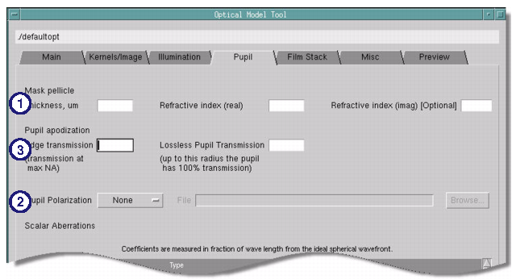

During wafer
patterning a pellicle film covers the mask. The pellicle film has
an effect on the optical image. The pellicle function is needed
at hyper NA. Thus, for numerical apertures above 1, it is recommended
that pellicle information be included in the optical model.
At high numerical apertures, the optical system
pupil also produces some apodization. The apodization effects are
described by a Jones pupil. In Calibre WORKbench Jones pupil properties
can be added to the optical model when a Jones Pupil file is available.
The use of a Jones pupil file is recommended if it is available.
Prerequisites
Information
on the characteristics of the pellicle film (n, k, thickness)
Jones
pupil file, if available
Optical
model filled out with other optical model settings
Procedure
- Switch to the Pupil tab.
Enter relevant values for the pellicle film in the fields shown
in Figure 1.
Table 1. Pellicle Film FieldsField
|
Definition
|
|---|
Thickness
|
The pellicle thickness
in microns, typically one of 0.28, 0.56, or 0.83 um. The pellicle
is assumed to have a uniform thickness.
|
Refractive index (real)
|
The real refractive index
of the pellicle material.
|
Refractive index (imag)
|
The imaginary refractive
index of the pellicle material. This is assumed to be zero unless
otherwise specified.
|
- If a Jones pupil information
file is also available, add it by changing the Pupil Polarization
control to File and entering the filename.
- Optionally, specify the pupil
transmission at the maximum NA and the lossless point as separate
data values in the Pupil tab, Edge Transmission
and Lossless Pupil Transmission fields. For more information on pupil
apodization, see the section pupilApodization.
Figure 1. Adding Pellicle and
Jones Pupil Information to the Optical Model Tool
If the pellicle was used
during wafer exposures for collecting model calibration data, the
pellicle information needs to be included as described above.
If the pellicle was not
used during wafer exposures for CD measurements, the optical model
should be calibrated with the pellicle fields empty. The pellicle
information should then be added to the optimized model during OPC
to reflect that pellicle is present during wafer exposures in production.
Calibre WORKbench handles
pupil apodization effects by modeling radially symmetric amplitude
non-idealities in the pupil transmission. These models are independent
of electric field polarization.